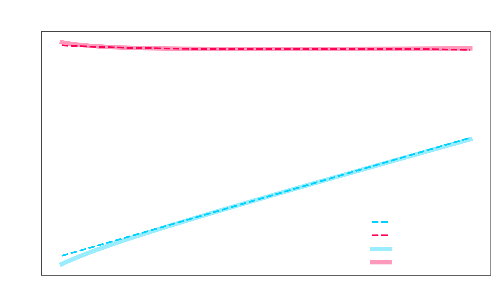
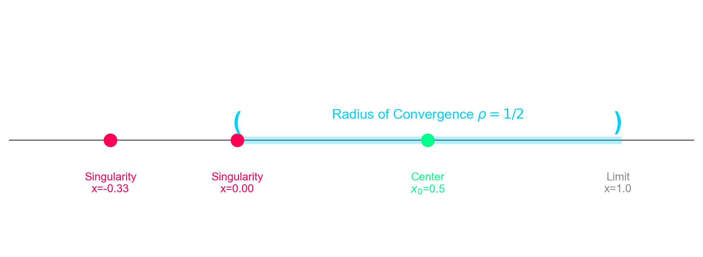

Series Solutions & Singular Dynamics
Coursework (Individual Project - Spring 2025)
Frobenius Method & Regular Singular Points
This project analyzed a second-order linear differential equation containing multiple singular points, and developed closed-form series solutions using the Frobenius method. The work focused on identifying the singular structure, deriving the indicial equation, and constructing two independent power series solutions.
Instead of searching for a simplified closed-form expression, the analysis approached the problem the way many engineering systems are handled: by building a structured approximation that remains mathematically valid near the singularity and converges within a provable interval.
- Singularity Classification: Identified ordinary vs. singular points and located the nearest singularity that bounds convergence.
- Indicial Equation: Derived two distinct exponents r₁ and r₂ for linearly independent solutions.
- Recurrence Relation: Built a coefficient recursion that generates successive terms in both series.
- Validation: Compared truncated series to a numerical solution within the convergence interval.
Problem Setup & Solution Structure
>> Differential Equation Context
Analysis Pipeline
Key Results & Visuals
Truncated Series vs Numerical Solution
The truncated series closely matched the numerical solution inside the convergence interval, confirming the correctness of the recurrence structure.
Convergence Interval & Singularities
The allowable interval was bounded by the nearest singularity, defining the domain where both solutions remain valid.